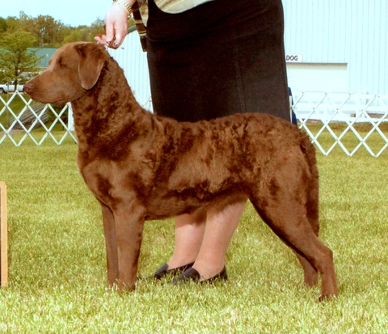
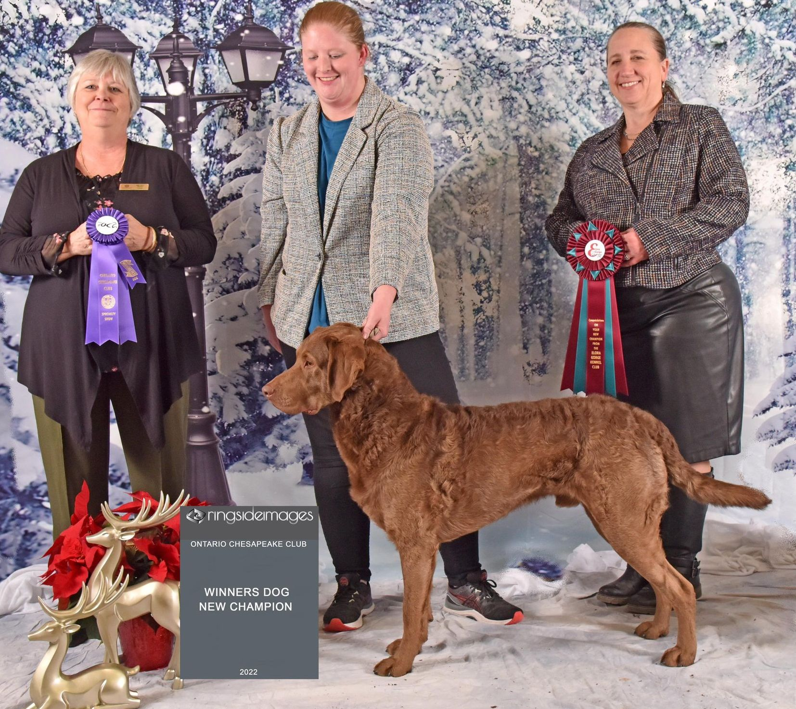

'Alexa'MBISS Can GCH Am CH Mercer's Virtual Bird Dog (MBISS Cdn GCHB Am GCHS Redlion's Invasion CGC TKN x CH Mercer's Rhapsody in Brown) Born October 25, 2020 CH (American Kennel Club) CH (Canadian Kennel Club) GCH (Canadian Kennel Club) BISS CBRCC Regional Nov 2022 BISS OCC Regional Dec 2022 Breeders / Owners: Dana & Veronica Mercer 'Chloe'Am GCHB Cdn GCH Wawa's Fowl Search Engine  (Am/Cdn CH MBISS Mercer's Non-Fiction x Mercer's Wawa Sisterhood WC) Born June 8, 2014 CH (American Kennel Club) GCH (American Kennel Club) Group Placing (AKC) Breeders: Deb Burton, Dana & Veronica Mercer Owners: Chuck Crump, Dana & Veronica Mercer PRA Carrier DM Clear OFA Hips Fair OFA Elbows Normal OFA Cardiac Clear OFA Eyes 2018 OFA Thyroid Normal 'Gordie'BPIG Mercer's Light The Lamp (Am/Cdn CH Mercer's Birden Of Proof x CH Mercer's Rhapsody In Brown) Born February 25, 2019 Best Puppy In Group (Canadian Kennel Club) Breeders/Owners: Dana & Veronica Mercer 'Killer'BPIG Mercer's Runnin' Down A Dream (MBISS Cdn GCHB Am GCHS Redlion's Invasion CGC TKN x Mercer's American Gothic) Born June 4, 2021 Best Puppy In Group (Canadian Kennel Club) Breeders/Owners: Dana & Veronica Mercer 'Pawpie'CH Mercer's Darlin' O' The Wawa Navy (Am GCHG Hardwood's Full House DSX3 x Am GCHB Cdn Wawa's Fowl Search Engine) Born March 8, 2019 CH (Canadian Kennel Club) Breeders: Dana & Veronica Mercer Owners: Deb Burton & Dana & Veronica Mercer 'Rudder'CH Mercer's Sea Salt and Sand  (Am/Can GCH Mercer's Migration Saboteur' x Mercer's American Gothic) Born February 14, 2020 CH (Canadian Kennel Club) Breeders: Dana & Veronica Mercer Owners: Sarah Young & Dana & Veronica Mercer Titled by: Sarah Young 'Texas'CH Mercer's Seas Freedom (Am GCHG Hardwood's Full House DSX3 x Am GCHB Cdn Wawa's Fowl Search Engine) Born March 8, 2019 CH (Canadian Kennel Club) Breeders: Dana & Veronica Mercer Owners: John Á Janet Kueppers & Dana & Veronica Mercer
'Arthur'Am/Cdn CH Mercer's State Of The Art (Am/Cdn CH MBISS Mercer's Non-Fiction x Mercer's Top O' The Mornin') Born July 9, 2015 CH (American Kennel Club) Group Placing (CKC) Breeders/Owners: Dana & Veronica Mercer 'Butch'CH Mercer's Rhapsody In Brown (CH Mercer's Ben Havin' A Good Time x Mercer's Petticoat Commando) Born March 12, 2015 CH (Canadian Kennel Club) Breeders/Owners: Dana & Veronica Mercer 'Emma'CH Mercer's Duck and Bones (Am/Can CH SUCH Redlion's Hit Doctor Am/Cdn MH x CH Mercer's Writ For A Rat) Born May 27, 2010 CH (Canadian Kennel Club) Best of Opposte Sweeps (ACC National 2011) Breeders/Owners: Dana & Veronica Mercer Co-Owner: Chris Parent PRA Clear DM Clear EIC Clear 'Eva'Am/Can CH Mercer's Daredevil (Am CH Irish's Gallant Sailor x CH Mercer's Tennessee Brush Popper) Born May 30, 2012 CH (American Kennel Club) CH (Canadian Kennel Club) CH (American Kennel Club) Winners ACC Supported Madison, OH 2018 Breeders/Owners: Dana & Veronica Mercer PRA Clear DM Clear EIC Clear OFA Hips Good OFA Elbows Normal OFA Eyes 2013 'Guinness'CH Mercer's Five Star (CH Mercer's Ben Havin' A Good Time x CH Mercer's Duck and Bones) Born June 1, 2012 CH (Canadian Kennel Club) Breeders/Owners: Dana & Veronica Mercer Co-Owners: Darren & Bev Keyes 'Layken'BPIG Am CH Mercer's Birden Of Proof (BIS BISS Am GCH Chesabar's True Grit x MBISS Am CH Cdn GCH Mercer's True Love) Born April 5, 2014 BPIG (Purina National 2014) CH (American Kennel Club) Breeders/Owners: Dana & Veronica Mercer Co-Owners: Mark & Michelle Argent DM Carrier PRA Clear OFA Hips Good OFA Elbows Normal OFA Eyes 2018 'Lexi'CH Mercer's Guilty By Association (BIS BISS Am GCH Chesabar's True Grit x MBISS Am CH Cdn GCH Mercer's True Love) Born April 5, 2014 CH (Canadian Kennel Club) Breeders/Owners: Dana & Veronica Mercer Co-Owners: Derek & Kaleena Mercer 'Linda Lou'CH Mercer's Jenny Wren (BISS Am/Cdn CH The North Shore's Navy Seal x CH Norshore's High Black Water) CH (Canadian Kennel Club) Breeders: Dana & Veronica Mercer Owner: Suzanne Dick 'Marshall'Am/Cdn GCH Mercer's Migration Saboteur (Am/Cdn CH The North Shore's Navy Seal x CH Mercer's Baby Sister) Born May 31, 2010 Marshall finished his US title going Best of Winners at the American Chesapeake Club National Specialty in Lancaster, PA in 2014. GCH (American Kennel Club) GCH (Canadian Kennel Club) Best of Winners (American National 2014) Group Placing (AKC & CKC) Breeders/Owners: Dana & Veronica Mercer PRA Clear DM Clear OFA Hips Good OFA Elbows Normal OFA Cardiac Clear OFA Eyes 2014 'McSister'Am GCH Mercer's Top O' The Mornin' (Am GCH Irish's Master Jake x CH Mercer's Baby Sister) Born March 17, 2012 GCH (American Kennel Club) CH (Canadian Kennel Club) BPIG (CKC) Breeders/Owners: Dana & Veronica Mercer Owners: Dana & Veronica Mercer 'Mick'BPIS Mercer's Finn MacCool (Am GCH Irish's Master Jake x CH Mercer's Baby Sister) Born March 17, 2012 BPIS (CKC) Breeders: Dana & Veronica Mercer OFA Cardiac Clear (Echo) 'Porter'AM/CDN GCH UKC CH IABCA CH Mercer's Takin' On The Outfit (Am/Can CH SUCH Redlion's Hit Doctor Am/Cdn MH x Am/Cdn CH Mercer's Writ For A Rat) GCH (Canadian Kennel Club) GCH (American Kennel Club) Group Placing Puppy Group Winning UKC CH IABCA CH Breeders/Owners: Dana & Veronica Mercer Co-owner: Robert Boyd OFA Hips Moderate OFA Elbows Normal 'Tag'CH Mercer's Hashtag Freedom (Am/Cdn CH Mercer's Non-Fiction x SHR Mercer's Wawa Sisterhood WC) Born June 8, 2014 CH (Canadian Kennel Club) Breeders: Dana & Veronica Mercer, Deb Burton Owners: Dana & Veronica Mercer, John Kueppers